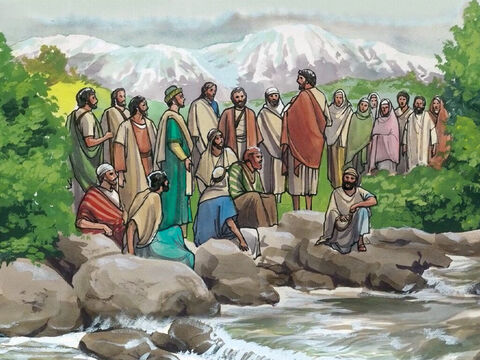
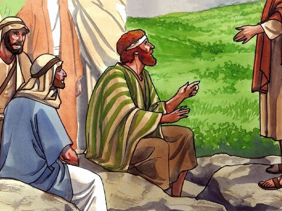
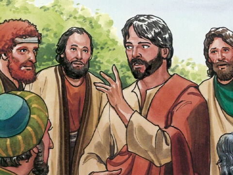

Peter Confesses Lord Jesus As The Christ
When Jesus came into the coasts of Caesarea Philippi, he asked his disciples, saying, Whom do men say that I the Son of man am?
And they said, Some say that thou art John the Baptist: some, Elias; and others, Jeremias, or one of the prophets.
He saith unto them, But whom say ye that I am?
And Simon Peter answered and said, Thou art the Christ, the Son of the living God.
And Jesus answered and said unto him, Blessed art thou, Simon Barjona: for flesh and blood hath not revealed it unto thee, but my Father which is in heaven.
And I say also unto thee, That thou art Peter, and upon this rock I will build my church; and the gates of hell shall not prevail against it.
And I will give unto thee the keys of the kingdom of heaven: and whatsoever thou shalt bind on earth shall be bound in heaven: and whatsoever thou shalt loose on earth shall be loosed in heaven.
Then charged he his disciples that they should tell no man that he was Jesus the Christ.
Matthew 16:13-20
- 
- 
- 